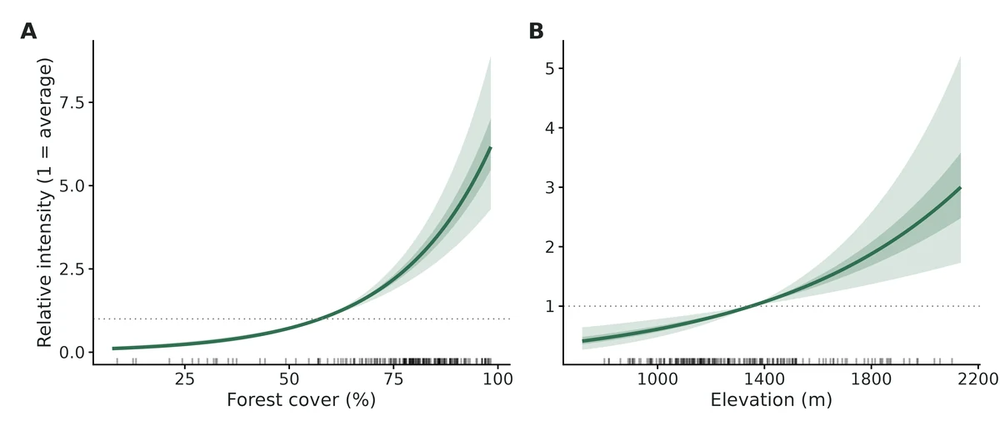
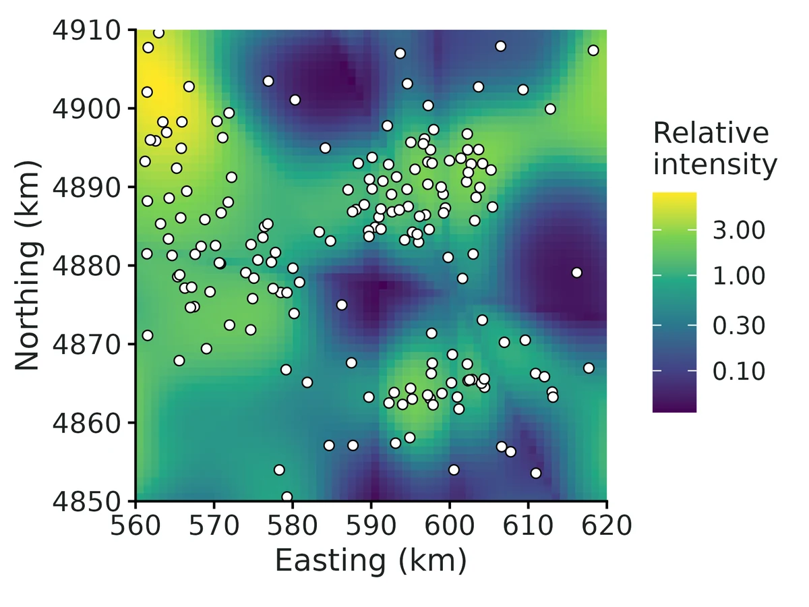
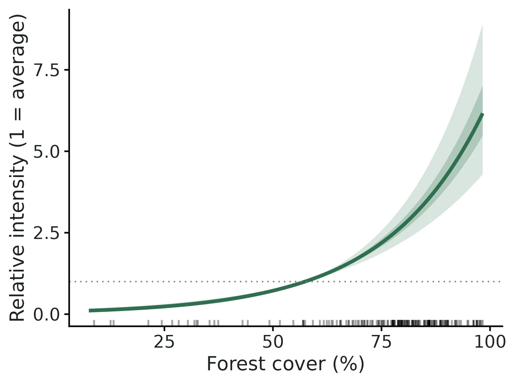
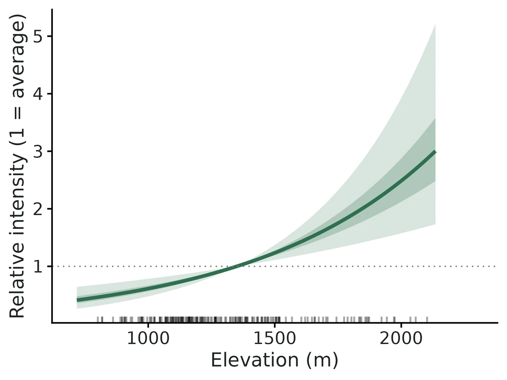

Species distribution from presence-only records (point process, Maxent, integrated with surveys)
"Which habitat is the species associated with, and where in my region is it most likely to be?" when all you have are places where it was recorded.
Is this the right analysis?
Use it when
You have presence-only records of a species (museum/herbarium specimens, iNaturalist/eBird-style incidental sightings, agency incidental reports, trapper/hunter reports) with coordinates, plus habitat covariates covering the study region (a raster stack or a regular covariate grid), and the question is which habitat the species is associated with and where in the region it is relatively most likely to occur. Optionally a sampling-bias covariate (distance to road/town/trail, access, observer density) and optionally a set of planned survey sites with detections AND non-detections (camera traps, plots, repeat visits).
Not for
Data with real absences at every site and no presence-only records (use occu-single or glm); counts at sites (nmixture/glm); telemetry locations of marked animals (movement-ssf, rsf); estimating prevalence, occupancy or abundance from presence-only records alone (impossible without survey data, see below); records with positional error much larger than the covariate grid cell; spatially clustered records with strong residual clustering (an LGCP / spatial random effect is not implemented here).
The data you need
Presence CSV (x, y in a projected metric CRS, optional species column); covariate grid CSV (x, y, covariates on a regular grid) or GeoTIFF rasters; names of habitat covariates and (strongly recommended) sampling-bias covariates; optional survey CSV (site, x, y, visit, detected 0/1) with the area each survey covers.
What the example's main data file looks like:
| record_id | species | date | source | easting | northing | coord_uncertainty_m |
|---|---|---|---|---|---|---|
| MACA-0104 | Martes caurina | 1995-02-21 | iNaturalist | 590978 | 4886164 | 100 |
| MACA-0082 | Martes caurina | 1995-04-01 | trapper report | 574705 | 4882671 | 30 |
| MACA-0122 | Martes caurina | 1995-06-09 | iNaturalist | 590115 | 4889744 | 30 |
| MACA-0093 | Martes caurina | 1995-06-27 | museum specimen | 590498 | 4884870 | 10 |
| MACA-0162 | Martes caurina | 1995-07-08 | trapper report | 597953 | 4897289 | 10 |
Not sure? Use the finder to compare modules.
The worked example
Pacific marten presence-only records: point-process species distribution model with road (observer-effort) bias correction (simulated example)
The question: Which habitat (forest cover, elevation) is Pacific marten occurrence associated with, and where in the study block are martens relatively most likely to occur, after allowing for most records coming from near roads?
The data are simulated, so the true answer is known and the analysis can be checked against it.
What the researcher typed
I have marten sightings in presence_records.csv (UTM 10N, metres; the file also has a few fisher records) and a 1 km habitat grid in covariate_grid.csv with forest cover, elevation and distance to road. Which habitat are martens associated with, and where are they most likely to occur? Most records come from near roads, so please correct for that. I'd like a report and figures for a paper.
Run it yourself
Download the example data below and unzip it.
Open the unzipped folder in Claude Code (see Install).
Paste the prompt above. The agent checks the files, writes a plan, runs planted truth, fits the model and writes the report. You can compare your results with the ones below.
Contains presence_records.csv, covariate_grid.csv, the settings file (config.yaml), a description of the data and a step-by-step walkthrough.
Study design details
| study region km2 | 3600 |
|---|---|
| grid cells | 3600 |
| cell km2 | 1 |
| presence records | 180 |
| other species records filtered | 12 |
| habitat covariates | forest_cover_pct, elevation_m |
| bias covariates | dist_road_km (4 roads) |
| elevation road correlation | 0.67 |
| engine | ppm (inhomogeneous Poisson point process, down-weighted Poisson regression) |
| record years | 1995-2024 |
| cv | 5-fold spatial block CV, 12 km blocks |
Results from the example data

What this means
- Forest cover (%): holding the other covariates at their landscape means, each 1 SD increase (24.6 percentage points) is associated with a change in relative intensity of occurrence of x2.99 (95% CI 2.42 to 3.70; +199%); per 10 percentage points, x1.56 (95% CI 1.43 to 1.70). Across the observed range (7.6% to 98.3%) this is a 56.4-fold difference.
- Elevation (m): holding the other covariates at their landscape means, each 1 SD increase (280 m) is associated with a change in relative intensity of occurrence of x1.48 (95% CI 1.22 to 1.80; +48%); per 100 m, x1.15 (95% CI 1.07 to 1.23).
- Sampling bias, Distance to road (km): the rate at which records were made changed by x0.36 (95% CI 0.28 to 0.47; -64%) per 1 SD (6.34 km) and x0.45 (95% CI 0.36 to 0.55) per 5 km. This describes where people looked, not where the species lives.
- For comparison, ignoring the bias covariate would give log-intensity slopes per SD of Forest cover (%) 0.98 instead of 1.10; Elevation (m) -0.23 instead of 0.39.
- The map is RELATIVE: a value of 2 means twice the landscape-average intensity of occurrence, not a 2% or 20% chance of presence.
- All effects are associations between covariates and where the species was recorded, after allowing for the stated sampling bias. They are not evidence that the covariate causes the pattern.
More figures



Figures are the module's default publication figures, reduced for the web. The report also saves them as PDF and full-resolution PNG.
Planted truth at the example's design
Before trusting the example's results, the module was run on many simulated data sets with the same design and known true values. Each row is one quantity: did the method get it back? (What the thresholds are.)
Every quantity checked passed planted truth at this design.
| This example | 180 presence records on a 60 x 60 km grid of 1 km2 cells, 2 habitat covariates, distance-to-road bias covariate |
|---|---|
| Design the module was validated at | about 200 presence records on a 60 x 60 km grid of 1 km2 cells, 2 habitat covariates, distance-to-road bias covariate |
The example uses the same landscape and covariate setup as the validated default, with slightly fewer records (180 vs an expected 200) and a similar elevation-road correlation (0.67 vs 0.6). In the power runs, habitat slopes stayed within about 8% bias at every size from 25 to 400 records, and power for a -0.5 per SD elevation effect was 0.94 at 100 records and 1.00 at 200, so 180 records is well inside the validated range.
3 of 3 rows pass.
| Quantity | True value | Average estimate | Bias | Allowed bias | Coverage (needed) | Result |
|---|---|---|---|---|---|---|
| bias_beta_dist_road_km | -1.1 | -1.09 | +0.5% | ±10.0% | 0.97 (0.904) | ✓ PASS |
| intensity_beta_elevation_m | 0.4 | 0.396 | -1.0% | ±10.0% | 0.96 (0.904) | ✓ PASS |
| intensity_beta_forest_cover_pct | 0.9 | 0.908 | +0.9% | ±10.0% | 0.95 (0.904) | ✓ PASS |
Limits that matter
- Presence-only data give relative intensity only: prevalence, occupancy and abundance are not identifiable without survey data (integrated engine).
- Sampling bias must be captured by the bias covariate; unmeasured, habitat-correlated effort biases habitat effects with confident intervals (negative control: elevation -73%, coverage 0.045).
- The bias covariate (distance to road) is assumed not to affect martens themselves; road avoidance would be absorbed into the bias term.
- Records are assumed independent (Poisson); clustered/duplicate records make intervals too narrow. No LGCP or spatial random effect. Block GOF here shows no clustering (P = 0.69).
- Positional error larger than a grid cell was not validated (here 10-500 m vs 1 km cells).
- If the 45 camera stations are added (integrated engine), absolute density/abundance are weakly identified below ~60-100 survey sites; read as an index.
All known limits from the module's validation record
- Sampling bias must be measured. If effort is driven by something not in
bias_covariatesand that driver correlates with habitat, habitat effects are biased (section 5: -73%) with confident intervals. Nothing in PO data can detect this. - Absolute density and abundance need about 60-100+ survey sites. At 60 sites, abundance is biased about +10% (gate FAIL by 0.5%). At 30 sites with p = 0.3 the level is not identified (+85-96% bias, 11/200 flagged). Habitat effects stay valid. Abundance is an extrapolation over the whole grid under a Poisson model; read it as an index.
- Survey-only fits (no PO) give slopes about 3x less precise, and forest is biased +10.6% at 100 sites (FAIL). Use them only for comparison.
- maxnet with
lqfeatures passes, but only at the coverage bound (0.905 vs 0.904). Hinge and product features (h,p) are allowed for mapping, but their coefficients are not reported as effects and were not validated for inference. - Independence. The model is an IPP. Clustered records (repeat records of the same animal or site), or residual spatial autocorrelation, make intervals too narrow. The block GOF test flags strong clustering. LGCP or spatial random effects are not implemented.
- Integrated model assumptions were not stress-tested: survey placement independent of habitat, constant detection, the same habitat response in both data sources, Poisson abundance per plot.
- Intervals for derived quantities are from the asymptotic normal of the ML estimates (delta-method-like draws), not profile likelihood.
- Positional error in records larger than the grid cell was not simulated.
How this module was validated
- 200 simulated datasets per design, fitted by maximum likelihood (presence-only point-process, integrated presence-plus-survey, and maxnet engines); each judged on bias within 10% and 95% interval coverage (how often the interval contained the truth).
- Default design PASSED for all habitat and sampling-bias slopes (bias at most 1.6%, coverage 0.955-0.975); the integrated model with 100 survey sites also passed for density, abundance, occupancy and detection.
- Harder designs: 50 records with bias-habitat correlation 0.8 passed; with only 30 survey sites and detection 0.3, density and abundance failed (+85% and +96% bias) while habitat effects stayed valid; abundance with 60 sites failed narrowly (+10.5%).
- Negative control: ignoring a habitat-correlated sampling bias failed the gate as it should (elevation effect -73% biased, coverage 0.045). False-positive rate with no habitat effect was 0.037-0.060 (nominal 0.05).
- Power analysis over 25-400 presence records: about 100 records needed for 80%+ power on a 0.5 per SD effect.
- Cross-checks: matched spatstat, a cell-count Poisson GLM and unpenalised maxnet to 3-4 decimals, unmarked occupancy to 4 digits, and an independent Bayesian Nimble model within 0.15 SE at 200 survey sites.
- A separate verifier agent wrote its own simulator (different grid, covariates and bias source), passed all gates, reproduced the builder's numbers and fixed five data-checking and wording issues; verdict: verified with limits.
Every run uses the acceptance gate described on the validation page. The full record follows, section by section, exactly as kept in the module's VALIDATION.md.
Settings and pass/fail rule used for every run
All numbers come from core/run.R recover / power runs on SLURM (njobvu, 16 cores) on 2026-10-19. Scripts: dev/sdm-presence-only/run_recovery.sh (configs dev/sdm-presence-only/*.yaml), dev/sdm-presence-only/crosscheck.R, dev/sdm-presence-only/run_examples.sh. Logs: logs/sdm-presence-only_recover_main.log, logs/sdm-presence-only_recover_extra.log, logs/sdm-presence-only_crosscheck.log. Outputs: results/sdm-presence-only/recover_*.
Gate (recovery_gate(), fixed in core): |bias| <= max(10% of truth, 3 MC SE); 95% coverage >= 0.95 - 3 MC SE (0.904 at nsim 200, 0.921 at 500, 0.912 at 300); >= 90% of replicates converged. "Converged" means the optimiser converged, the information matrix was invertible, and no link-scale parameter except the PO intercept has
| estimate | > 10 or SE > 5. That boundary check was added in this build so that |
|---|
non-identified fits are flagged instead of reported.
Default design (defaults): 60 x 60 km grid of 1 km² cells. Two habitat covariates: forest cover %, and elevation m, which has r = 0.6 with sqrt(distance to road) because roads follow valleys. One bias covariate, distance to the nearest of 4 roads. Expected 200 presence records. Truth (per 1 SD): forest +0.8, elevation -0.5, recording rate vs distance to road -1.0. Density 0.5 per km² at mean habitat. For integrated designs, survey plots of 1 km² with 3 visits and p = 0.5.
Fit time per replicate: ppm 0.05 s, integrated 0.24 s, maxnet (with 50 bootstrap refits) 4.4 s. fast_settings only switch off CV, GOF and the quadrature check, and use 500 instead of 2000 parametric draws (these affect only derived-quantity intervals) and 50 maxnet bootstrap resamples.
1. Recovery at the default design: ppm engine (presence-only), nsim = 200: PASS
| estimand | truth | mean est | rel. bias | RMSE | coverage | CI width | power | gate |
|---|---|---|---|---|---|---|---|---|
| intensity_beta_forest_cover_pct | 0.8 | 0.807 | +0.8% | 0.095 | 0.955 | 0.364 | 1.00 | PASS |
| intensity_beta_elevation_m | -0.5 | -0.492 | +1.6% | 0.092 | 0.975 | 0.381 | 0.99 | PASS |
| bias_beta_dist_road_km | -1.0 | -1.010 | -0.5% | 0.149 | 0.965 | 0.605 | 1.00 | PASS |
200/200 converged.
2. Integrated engine (PO + 100 survey sites x 3 visits), nsim = 200: PASS
| estimand | truth | mean est | rel. bias | coverage | gate |
|---|---|---|---|---|---|
| intensity_beta_forest_cover_pct | 0.8 | 0.809 | +1.1% | 0.955 | PASS |
| intensity_beta_elevation_m | -0.5 | -0.489 | +2.3% | 0.960 | PASS |
| bias_beta_dist_road_km | -1.0 | -1.010 | -0.9% | 0.960 | PASS |
| density_at_mean_covariates (per km²) | 0.5 | 0.539 | +7.9% | 0.965 | PASS |
| expected_total_abundance | 2570 | 2800 | +9.0% | 0.945 | PASS |
| mean_occupancy_prob (1 km² plot) | 0.436 | 0.452 | +3.6% | 0.960 | PASS |
| detection_prob | 0.5 | 0.483 | -3.4% | 0.960 | PASS |
200/200 converged. The positive bias in density and abundance (+8-9%) is the usual small-sample retransformation bias of exp(ML estimate of log density). It shrinks as survey sites are added (section 3).
3. Variants
Integrated with 60 survey sites (nsim = 200): all habitat/bias slopes, detection and occupancy PASS. Density +9.1% PASS. expected_total_abundance +10.5% FAIL (bias tolerance 10%; coverage 0.950 is fine). With about 60 sites the abundance point estimate is biased high by about 10%, though its interval is honest. Documented under Known limits.
maxnet engine (linear features, regmult 1, percentile bootstrap with 50 resamples):
| features | nsim | forest bias / cov. | elevation bias / cov. | road bias / cov. | gate |
|---|---|---|---|---|---|
l (default) | 200 | -0.4% / 0.935 | +2.2% / 0.945 | +1.4% / 0.930 | PASS all |
lq | 200 | +0.4% / 0.905 | +1.8% / 0.940 | +1.2% / 0.935 | PASS all (forest coverage at the 0.904 bound) |
At nsim = 100, an earlier lq run had forest coverage 0.88 against a bound of 0.885 (FAIL). The unnecessary quadratic features make the bootstrap intervals for the linear terms slightly anti-conservative. This is why the default is l, with q added automatically for covariates listed in quadratic.
Quadratic habitat response (elevation_sq = -0.4, ppm, nsim = 200): PASS all. Coverage: forest 0.955, elevation 0.975, elevation_sq 0.970, road 0.950. Relative bias at most 2.9%.
survey_only engine (100 sites, no PO data; comparison only, nsim = 200): density +7.2%, detection -3.5% and occupancy +3.6% PASS. Elevation slope -4.3% PASS. Forest slope +10.6% FAIL (coverage 0.970 fine). Abundance +31.7% passes only because the MC SE is huge (RMSE 4020; a few replicates with weakly identified slopes inflate the mean; coverage 0.955). In practice it is unreliable. Survey-only CI widths for the slopes are about 3x those of the integrated fit (forest 1.07 vs 0.34). This shows the gain from integration.
4. Harder designs
hard_ppm: 50 presence records with bias-habitat correlation 0.8 (nsim = 200): PASS all. Forest +2.3%, coverage 0.975. Elevation +3.9%, 0.965. Road -5.3%, 0.930. Power: forest 1.00, elevation 0.555, road 0.84.
hard_integrated: 50 records, r = 0.8, only 30 survey sites x 2 visits, p = 0.3 (nsim = 200). 189/200 converged; 11 were flagged by the boundary check (density not identified). Among converged fits the slopes, detection (+12%, but within 3 MC SE) and occupancy PASS. density_at_mean_covariates +85% and expected_total_abundance +96% FAIL on bias, although coverage is 0.96-0.97 because the intervals are enormous (density CI width 118 per km²). At this design the absolute level is not estimable. The habitat effects remain valid.
5. Negative controls: the gate CAN fail
Ignoring a habitat-correlated sampling bias (bias_correction: false, default data with r = 0.6), nsim = 200:
| engine | estimand | truth | mean est | rel. bias | coverage | gate |
|---|---|---|---|---|---|---|
| ppm | elevation | -0.5 | -0.864 | -73% | 0.045 | FAIL |
| ppm | forest | 0.8 | 0.681 | -15% | 0.645 | FAIL |
| integrated (100 sites) | elevation | -0.5 | -0.819 | -64% | 0.060 | FAIL |
| integrated (100 sites) | forest | 0.8 | 0.711 | -11% | 0.685 | FAIL |
| integrated (100 sites) | abundance | 2570 | 3240 | +26% | 0.870 | FAIL |
Records cluster near valley roads, so low elevation looks preferred and the elevation effect is exaggerated by 73%. Power is still 1.00, so the wrong answer looks highly significant. With 100 survey sites, the integrated model does NOT rescue the habitat effects when the PO bias is left out, because the 200 PO records dominate the shared slopes.
6. False-positive rate (habitat effects = 0)
| design | nsim | forest: P(CI excludes 0) | elevation: P(CI excludes 0) | coverage forest / elev |
|---|---|---|---|---|
| ppm | 500 | 0.044 | 0.050 | 0.956 / 0.950 |
| integrated (100 sites) | 300 | 0.060 | 0.037 | 0.940 / 0.963 |
Both are close to the nominal 0.05 (MC SE about 0.01). All other estimands PASS in both runs.
7. Power over the number of presence records (ppm, nsim = 100 per point)
power sdm-presence-only --vary n_presence=25,50,100,200,400:
| n_presence | forest (0.8 / SD) | elevation (-0.5 / SD) | road bias (-1.0 / SD) | coverage range |
|---|---|---|---|---|
| 25 | 0.87 | 0.39 | 0.66 | 0.92-0.98 |
| 50 | 0.99 | 0.68 | 0.95 | 0.94-0.96 |
| 100 | 1.00 | 0.94 | 0.99 | 0.92-0.95 |
| 200 | 1.00 | 1.00 | 1.00 | 0.96-0.99 |
| 400 | 1.00 | 1.00 | 1.00 | 0.94-0.96 |
Relative bias stays within ±8.3% at every size. About 100 records are needed for 80%+ power on a 0.5-SD-scale effect when bias and habitat correlate at 0.6.
8. Cross-check against independent implementations (one dataset, seed 11, 60 survey sites)
results/sdm-presence-only/crosscheck/crosscheck.csv
Presence-only IPP:
| implementation | forest | elevation | road (bias) |
|---|---|---|---|
| module ppm (DWPR glm, grid quadrature) | 0.9153 (SE 0.104) | -0.7599 (0.127) | -0.8516 (0.199) |
| spatstat.model::ppm (Berman-Turner, own quadrature nd = 120) | 0.9153 (0.104) | -0.7595 (0.127) | -0.8521 (0.199) |
| Poisson GLM of record counts per cell (exact gridded likelihood) | 0.9153 (0.104) | -0.7599 (0.127) | -0.8516 (0.199) |
maxnet, l, regmult 1e-4 (bootstrap SD) | 0.9153 (0.094) | -0.7600 (0.123) | -0.8517 (0.215) |
maxnet, l, regmult 1 | 0.9041 | -0.7559 | -0.8285 |
The module, spatstat and the cell-count GLM agree to 3-4 decimals. Unpenalised maxnet gives the same point estimates, which confirms numerically that Maxent = IPP (Renner & Warton 2013; Fithian & Hastie 2013). With regmult 1 it shrinks slightly toward 0.
Survey (occupancy) part, module survey_only vs unmarked::occu(~1 ~ forest + elev + offset(log A), linkPsi = "cloglog"): identical to 4 digits. Forest 0.6717 (SE 0.2448), elevation -0.2181 (0.2932), density 0.7827, p 0.3967.
Integrated model, module ML vs an independently coded Nimble Bayesian model (Poisson cell counts for PO + latent-z occupancy for surveys; N(0, 10) priors, p ~ U(0,1); 3 chains x 20k, 5k burn-in). Scripts dev/sdm-presence-only/crosscheck.R (60 sites) and crosscheck_nimble200.R (200 sites); outputs results/sdm-presence-only/crosscheck/crosscheck*.csv.
| design | quantity | module ML (SE) [95% CI] | Nimble posterior mean (SD) [95% CrI] |
|---|---|---|---|
| 200 sites | forest | 0.939 (0.090) | 0.949 (0.092) |
| 200 sites | elevation | -0.732 (0.112) | -0.737 (0.111) |
| 200 sites | road (bias) | -0.881 (0.194) | -0.894 (0.192) |
| 200 sites | density / km² (truth 0.5) | 0.447 [0.31, 0.64] | 0.461, median 0.451 [0.32, 0.66] |
| 200 sites | detection p (truth 0.5) | 0.477 (0.039) | 0.475 (0.039) |
| 200 sites | expected abundance (truth 3012) | 3530 [2313, 5297] | 3728 [2483, 5686] |
| 60 sites | forest / elevation / road | 0.868 / -0.685 / -0.900 | 0.889 / -0.708 / -0.909 |
| 60 sites | density / km² | 0.81 [0.29, 2.23] | 1.33 (SD 2.18) [0.42, 3.88] |
| 60 sites | detection p | 0.375 (0.072) | 0.361 (0.066) |
Nimble R-hat <= 1.004 and min ESS >= 1015 in both. When the absolute level is well identified (200 sites) the two implementations agree to within 0.15 SE on every quantity. This confirms the integrated likelihood. With 60 sites the slopes still agree within 0.2 SE, but the density posterior is strongly right-skewed: density and p trade off, the likelihood is flat toward "high density, low p", and the posterior centre moves up by about 0.9 log-scale SE. This is the same weak identification behind the +10% abundance bias at 60 sites (Known limit 2), not a coding difference.
Quadrature convergence on the example data (fit with quadrature_check: true): coefficients from every 2nd grid cell (900 quadrature points) differ from the full grid (3600) by at most 0.17 SE. Every 8th cell (56 points) moves elevation by 1 SE, so coarse quadrature matters (Renner et al. 2015). The full grid is always used for estimates.
9. Example fits
Simulated Pacific marten records in a 60 x 60 km Cascades block. True values are in example/TRUTH.txt.
- ppm (180 records): forest 1.10 (95% CI 0.88-1.31; truth 0.9), elevation 0.39 (0.20-0.59; truth 0.4), road -1.02 (-1.29 to -0.76; truth -1.1). Block GOF dispersion 0.94, P = 0.69. Spatial block CV: habitat-map AUC 0.67, Boyce 0.68; records-map AUC 0.76.
- integrated (+45 camera stations x 4 occasions): density at mean habitat 0.344 per km² (0.185-0.626; truth 0.4), expected abundance 2245 (1219-3992; truth 2300), p 0.49 (0.35-0.62; truth 0.45). AUC on held-out camera stations 0.82.
- Ignoring the road bias would flip the elevation effect from +0.39 to -0.23 per SD. The report states this. I checked the report sentences against the estimates table: per-SD and per-unit ratios, range fold-changes and the bias comparison.
Independent verification (2026-10-20, separate verifier agent)
Scripts: dev/sdm-presence-only/verify/ (verify_sim.R, run_all.sh, messy_test.R, rerun_after_fix.sh). Logs: logs/sdm-presence-only_verify.log, logs/sdm-presence-only_verify_after_fix.log. Outputs: dev/sdm-presence-only/verify/out/.
Literature check. The code matches Fithian et al. (2015, arXiv 1403.7274v2) Eq. 4-8: log lambda = alpha + beta'x and log b = gamma + delta'z, the PO intensity is lambda*b with only alpha + gamma identifiable, and survey occupancy is 1 - exp(-|A| lambda) (cloglog with offset log A). Koshkina et al. (2017) detection is added as a constant per-visit p. I re-derived the analytic gradient of the integrated likelihood (including the d/d logit p terms for detected and undetected sites) and it is correct. The DWPR in the ppm engine is the exact gridded IPP likelihood, which the builder's spatstat and cell-count GLM cross-check also shows. In maxnet (source checked: binomial glmnet, standardize = FALSE, background weight 100), alpha cancels in the module's link-difference predictions. simulate() and fit() share only the standardisation convention, which defines the estimand. The data-generation code is not shared.
Independent simulator (own code, none from the module): rectangular 48 x 36 grid of 1.5 km cells (2.25 km², so cell area must be derived from metre coordinates), UTM-style coordinates and researcher-style column names. Every replicate goes through CSV -> read_data() -> check_data() -> fit(), with 5 records of another species to be filtered out. Habitat: precipitation (bump-sum field) and January temperature. Bias: distance to the nearest of 3 towns, correlated with temperature (|r| 0.6-0.96 across replicates). Records: N ~ Poisson(150), then multinomial allocation to cells. Truth: precip -0.6, temp +0.35, town bias -0.8 per SD. Integrated: 80 plots of 0.5 km² at random positions inside cells, 4 visits with 15% of visits missing, p = 0.35, density 1.0 per km². Gate = core summarise_recovery() + recovery_gate().
| scenario | nsim | estimand | truth | rel. bias | coverage | gate |
|---|---|---|---|---|---|---|
| ppm | 300 | precip / temp / town | -0.6 / 0.35 / -0.8 | -0.1% / -0.8% / -1.2% | 0.943 / 0.930 / 0.920 (bound 0.912) | PASS all |
| integrated | 200 | precip / temp / town | 0.0% / +2.5% / +0.4% | 0.945 / 0.960 / 0.940 | PASS | |
| integrated | 200 | density / abundance / occupancy / p | 1.0 / ~4886 / 0.422 / 0.35 | +5.3% / +7.4% / +1.6% / -0.5% | 0.965 / 0.975 / 0.965 / 0.975 | PASS all |
| maxnet (l) | 100 | precip / temp / town | +3.7% / +1.4% / +2.3% | 0.98 / 0.90 / 0.91 (bound 0.885) | PASS all |
200/200, 200/200 and 100/100 converged, with no errors. Highly collinear replicates (temp vs town
| r | > 0.85; 113 of 300 ppm reps) stayed unbiased (temp bias -0.006) with coverage 0.91 and CI width |
|---|
0.96, against 0.61 otherwise. The intervals widen honestly.
Controls. False-positive rate with the temperature effect = 0 (and that covariate correlated with the bias covariate), ppm, nsim 500: P(CI excludes 0) = 0.042, coverage 0.958; other estimands PASS. Negative control, bias ignored: ppm temp +161% (coverage 0.035) and precip coverage 0.595, both FAIL. Integrated (80 plots) with bias ignored: temp +143% (0.050), precip (0.608) and abundance (+99%, 0.879) FAIL. The gate fails as it should, and the survey data do not rescue a missing bias covariate.
Builder's numbers reproduced. I reran recover for default, integrated and negctrl_nobias (nsim 200 each; dev/sdm-presence-only/verify/out/rerun_*). Every number in sections 1, 2 and 5 (ppm rows) matches to the printed digits.
Usability (example fits and messy data). fit on both example configs reproduces section 9. I checked every interpretation sentence by hand: exp(1.0955) = 2.99, per 10 points exp(1.0955 x 10/24.6) = 1.56, range fold 56, per 100 m 1.15, road x0.36 and x0.45 per 5 km, the derived integrated quantities, and the relative-only caveat for PO and the detection caveat for integrated. All are correct and non-causal. The figures required by docs/FIGURES.md (intensity_map, effect_<cov>, bias_effect, evaluation, response_curves_panel, plus extras) are present, and I viewed the PNGs. Curves cross 1 at the covariate mean, the values agree with the estimates, axes are in original units, and there are no visual defects.
Problems found and fixed (module code only; core untouched):
check_data()blocked any fit where a habitat covariate correlated |r| > 0.85 with a bias covariate, and told the user to "drop one". Dropping the bias covariate is exactly the negative control (+161% bias). Such fits are valid (see above), so the pair is no longer blocking.sdm_prepare()now adds a report note that explains the wide interval and warns against dropping the bias covariate. Habitat-habitat collinearity is still blocked.- Survey typos were silent. A misspelled site id (CAM01 for CAM002) became an extra one-visit site.
read_data()/check_data()now flag one id at several locations, two ids at identical coordinates ("is one of them a misspelled site id?") and duplicated site x visit rows. The non-0/1 detection message now names the value, site and visit. - Presence rows with a missing coordinate were dropped without notice. Now the dropped count and file rows appear in the report notes.
- The quadrature-check note claimed that "every 8/4/2-th cell" differed by at most 0.17 SE, but that number applied only to every 2nd cell (every 8th: 1.00 SE). The note now lists the maximum change at each spacing.
- For "%" covariates, the per-SD and per-step increments were written as "24.6%", which reads as a relative change. They now read "24.6 percentage points". After the fixes, the example estimates are identical and the independent ppm/integrated recovery was rerun with identical results (all PASS). The selftest passes.
Verdict: VERIFIED_WITH_LIMITS. All gates pass at the builder's defaults and at an independent design, the controls behave, and the literature equations match. The limits listed under Known limits stand: absolute density with fewer than about 60 survey sites, survey-only fits, maxnet lq at the coverage bound, no LGCP, and unmeasured bias.
Engine, references and full details
Engine: ppm = inhomogeneous Poisson point process by down-weighted Poisson regression (stats::glm.fit) on grid quadrature; integrated = joint maximum likelihood of the presence-only IPP and a cloglog occupancy model of survey data with detection probability (optim, BFGS with analytic gradient); maxnet = Maxent via glmnet with percentile-bootstrap intervals; survey_only = survey part alone (comparison).
References
- Warton DI, Shepherd LC (2010) Poisson point process models solve the "pseudo-absence problem" for presence-only data in ecology. Annals of Applied Statistics 4:1383-1402.
- Renner IW, Elith J, Baddeley A, Fithian W, Hastie T, Phillips SJ, Popovic G, Warton DI (2015) Point process models for presence-only analysis. Methods in Ecology and Evolution 6:366-379. doi:10.1111/2041-210X.12352
- Fithian W, Hastie T (2013) Finite-sample equivalence in statistical models for presence-only data. Annals of Applied Statistics 7:1917-1939.
- Renner IW, Warton DI (2013) Equivalence of MAXENT and Poisson point process models for species distribution modeling in ecology. Biometrics 69:274-281.
- Phillips SJ, Anderson RP, Dudík M, Schapire RE, Blair ME (2017) Opening the black box: an open-source release of Maxent. Ecography 40:887-893. doi:10.1111/ecog.03049
- Warton DI, Renner IW, Ramp D (2013) Model-based control of observer bias for the analysis of presence-only data in ecology. PLoS ONE 8:e79168.
- Fithian W, Elith J, Hastie T, Keith DA (2015) Bias correction in species distribution models: pooling survey and collection data for multiple species. Methods in Ecology and Evolution 6:424-438. doi:10.1111/2041-210X.12242
- Koshkina V, Wang Y, Gordon A, Dorazio RM, White M, Stone L (2017) Integrated species distribution models: combining presence-background data and site-occupancy data with imperfect detection. Methods in Ecology and Evolution 8:420-430. doi:10.1111/2041-210X.12738
- Dorazio RM (2014) Accounting for imperfect detection and survey bias in statistical analysis of presence-only data. Global Ecology and Biogeography 23:1472-1484. doi:10.1111/geb.12216
- Ward G, Hastie T, Barry S, Elith J, Leathwick JR (2009) Presence-only data and the EM algorithm. Biometrics 65:554-563.
- Berman M, Turner TR (1992) Approximating point process likelihoods with GLIM. Applied Statistics 41:31-38.
- Hirzel AH, Le Lay G, Helfer V, Randin C, Guisan A (2006) Evaluating the ability of habitat suitability models to predict species presences. Ecological Modelling 199:142-152.
- Roberts DR et al. (2017) Cross-validation strategies for data with temporal, spatial, hierarchical, or phylogenetic structure. Ecography 40:913-929.
- Baddeley A, Rubak E, Turner R (2015) Spatial Point Patterns: Methodology and Applications with R. CRC (spatstat, used for the cross-check).